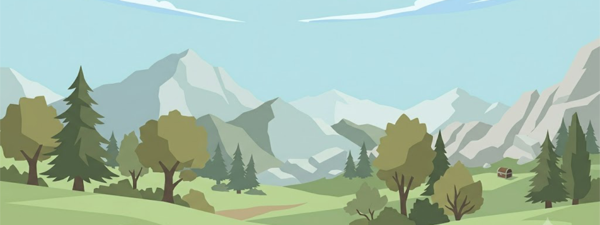

🍽️ 내가 좋아하는 음식
- 매콤한 떡볶이
- 여름엔 시원한 냉면
- 주말의 치킨과 맥주
- 든든한 김치찌개
✅ 올해 할 일
- 프론트엔드 실습 과제 완성하기
- 자바스크립트 기초 다지기
- 해외여행 한 번 다녀오기
- 운동 습관 만들기
🏷️ 나를 설명하는 단어들
- 꾸준함
- 한번 시작한 건 끝까지 해보려고 합니다.
- 호기심
- 새로운 기술이나 장소에 관심이 많습니다.
- 계획형
- 여행이든 공부든 미리 정리해두는 편입니다.

저를 좀 더 잘 알 수 있는 몇 가지 정보를 정리했습니다.